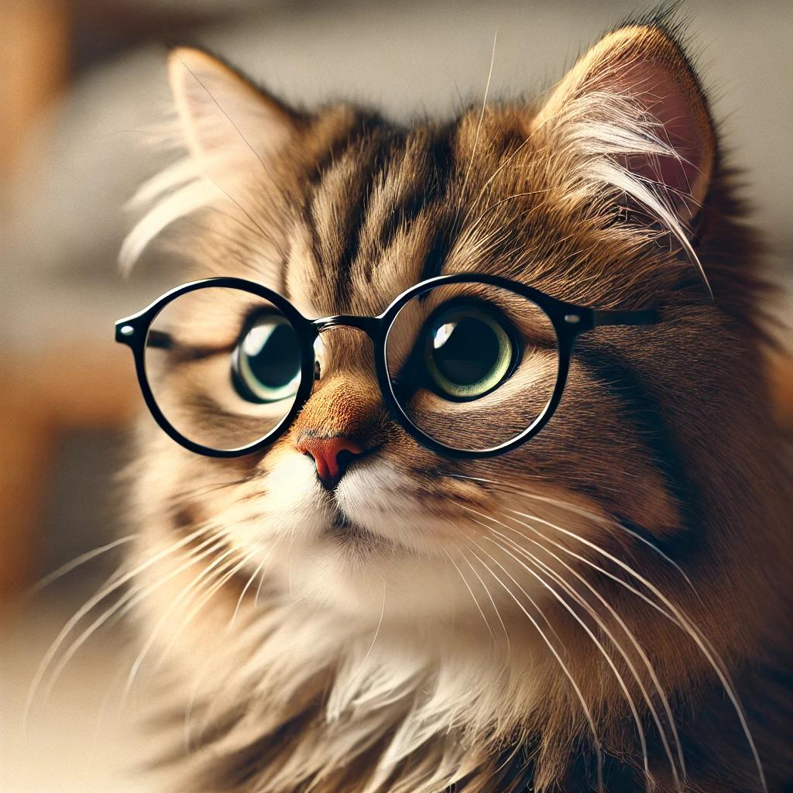

Whiskers McFluffyPaws

Professional Napper & Feline Extraordinaire
Whiskerville, Catlandia
[whiskers@meowmail.com] | [555-PAW-1234] | [linkedin.com/in/whiskersmcfluffypaws] | [www.whiskerswebdesign.com]
Objective Statement
To find the comfiest sunbeam for napping and to befriend all the birds outside the window. As a seasoned feline, my primary goal is to bring joy, mischief, and purrs to my human companions while maintaining a rigorous schedule of lounging and occasional zoomies.
Education
Bachelor of Arts in Cuddling & Purring
Whiskler University, Mleowtown
September 2015 – May 2019
Master of Science in Advanced Napping Techniques
Catnap Institute, Cozy Corner
September 2019 – May 2021
Work Experience
Chief Nap Officer (CNO)
Purrfect Dreams Inc., Whisker Heights
June 2021 – Present
- Perfected the art of sleeping anywhere, anytime, from sunny spots to inconvenient spots on laptops.
- Provided daily demonstrations of optimal stretching techniques and yoga poses.
- Played a critical role in the testing and approval of various types of cat beds, boxes, and human laps.
- Engaged in rigorous morning and evening zoomie sessions to maintain household energy levels.
- Offered emotional support to humans through consistent purring and head-butting.
Bird-Watcher in Residence
Window Ledge Industries, Catville
June 2019 – May 2021
- Maintained a vigilant watch over backyard birds, squirrels, and occasional passing butterflies.
- Expertly positioned myself on window ledges, ensuring the best vantage points for surveillance.
- Developed a repertoire of chirps and chatter to communicate with outdoor wildlife.
- Ensured that all humans were informed of bird activity through pointed stares and tail flicks.
Junior Mischief Maker (Internship)
Fur-tastic Antics, Whisker Woods
June 2018 – August 2018
- Assisted senior cats in executing classic pranks, including “Knocking Things Off the Table” and “Hiding in Plain Sight.”
- Participated in late-night shenanigans, such as random sprints and mysterious crashes.
- Provided humans with unpredictable wake-up calls by walking across their faces at 3 AM.
- Enhanced the household ambiance by strategically shedding fur on all available surfaces.
Skills
- Napping: Expert-level napper, with the ability to fall asleep in any location or position.
- Purring: Soothing purrs that can be adjusted for volume and duration depending on the human’s needs.
- Cuddling: Proficient in cuddling techniques, including lap-sitting, chest-napping, and leg-weaving.
- Bird Watching: Keen observer of birds and small critters, with a focus on window-side surveillance.
- Box Expert: Unparalleled knowledge of fitting into boxes, no matter the size or shape.
Awards & Certifications
- Best in Purring – Meowtown Cat Show, 2020
- Most Graceful Napper – Catnap Institute, 2021
- Champion of the Cat Tree Climbing Contest – Whisker Heights, 2019
Others
© [2024] Whiskers McFluffyPaws. All rights reserved. This resume is purely fictional and is meant for feline amusement only. Redistribution or reproduction without written consent from Whiskers McFluffyPaws may result in a stern meow.